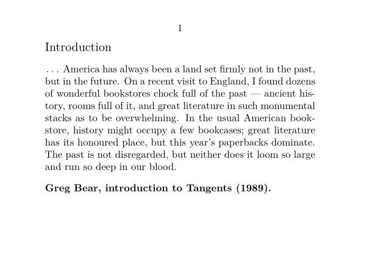

Contents
Summary
Description
\starttext ... \stoptext
The first command takes care of a number of initializations, and the last command tells TEX
that processing can stop. When this command is left out TEX will display a * (a star) on the
command line at the end of the job. TEX will expect a command, for example \end.
It is advisable to type the document setups before the start-command, in the so-called setup area of the document. In this way a clever word processor can identify where the text starts, and therefore can include those setups when it partially processes the document (if it supports partial processing).
You can store (some of) the setups in an environment file (see \environment) or in a module (see \usemodule).
The commands \starttext...\stoptext may be nested: within a text a new text containing
\starttext and \stoptext may be loaded.
Examples
Example 1
-
\setuppapersize[A7,landscape] \starttext \subject{Introduction} \unknown\ America has always been a land set firmly not in the past, but in the future. On a recent visit to England, I found dozens of wonderful bookstores chock full of the past --- ancient history, rooms full of it, and great literature in such monumental stacks as to be overwhelming. In the usual American bookstore, history might occupy a few bookcases; great literature has its honoured place, but this year’s paperbacks dominate. The past is not disregarded, but neither does it loom so large and run so deep in our blood. \blank {\bf Greg Bear, introduction to Tangents (1989).} \stoptext
- 
Notes
See also
- file-job.mkvi
- Input and compilation/Project and file management useful for grouping documents that are related
- \environment
- \usemodule
- \startTEXpage to create a document consisting only of some typeset TeX
- \startMPpage to create a document consisting only of some Metapost graphic
- \startdocument for an extended version of \starttext that adds parameters